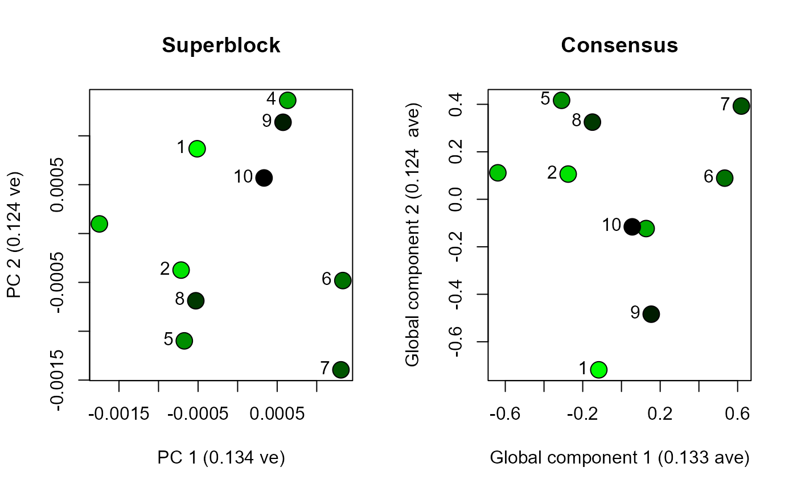
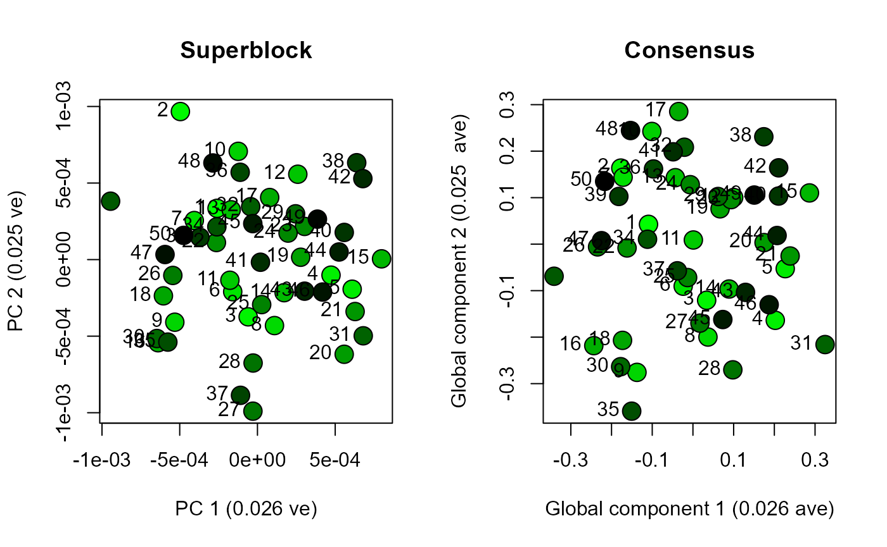
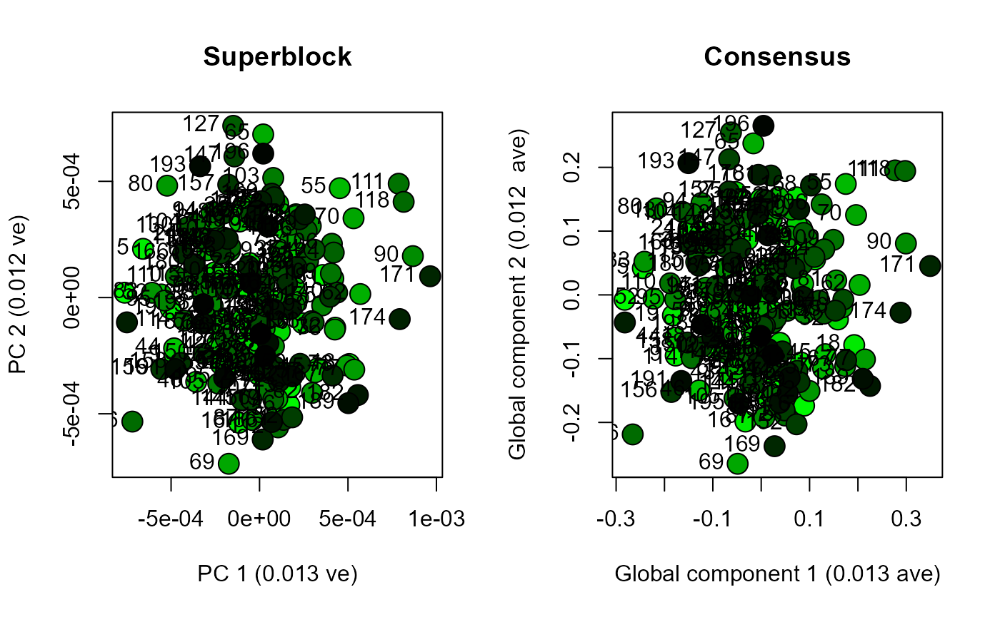
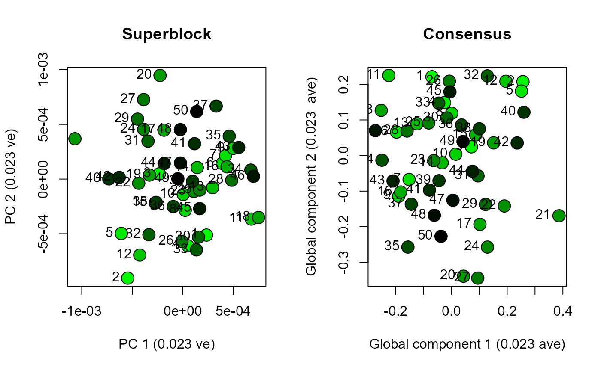
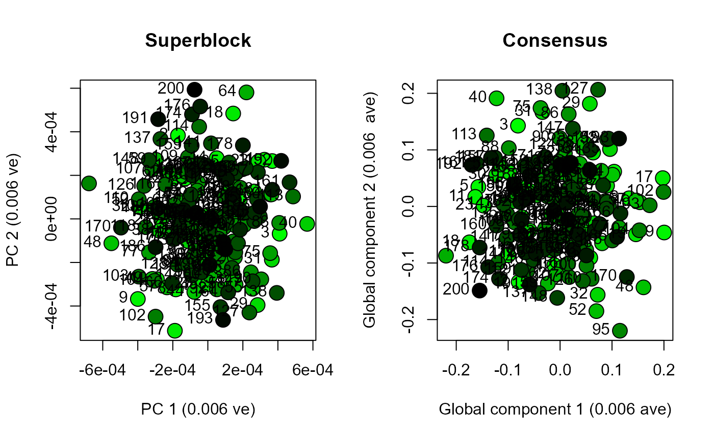

datasetSize.Rmd
A shape analysis using multiple elements may want to study partial skeletons from a few tens of specimens, or whole skeletons from hundreds of specimens. Increasing the number of blocks or specimens can increase the amount of time required to calculate a multiple-element morphospace. This vignette walks through a series of increasingly larger datasets to allow a user to test how long an analysis will take in a particular environment (e.g. on their local machine). As the user will discover, principal component analysis on the concatenated superblock will always be much quicker than Regularised Consensus Principal Component Analysis on complete list of blocks. RCPCA and PCA can produce very similar distributions of scores. To discover the specific value of RCPCA (i.e. block-level loading of variation) we recommend exploring vignette(“penguinWings”). Here though, we enable a user to explore the increasing computational demands of larger datasets.
Five datasets will be constructed using dodecBlock. Datasets comprise i specimens with variables distributed across j blocks. Each block in a specimen will contain 60 variables. For example, a specimen with 600 variables will comprise j = 10 blocks.
| Dataset | Specimens | Blocks |
|---|---|---|
| 1 | 10 | 10 |
| 2 | 50 | 50 |
| 3 | 200 | 10 |
| 4 | 50 | 206 |
| 5 | 200 | 206 |
This vignette includes functions for measuring how long a section of code takes to run. To measure this duration we start by recording the system time at the beginning of a section of code with start_time <- Sys.time(), followed by end_time <- Sys.time() at the end of our section of code. The duration for that section of code is thus given by end_time - start_time.
library(morphoBlocks)
#> Registered S3 method overwritten by 'spdep':
#> method from
#> plot.mst ape
# Start time
start_time <- Sys.time()
# Generate dataset 1
set.seed(1)
# Specify the number of samples
i <- 10
# Specify the number of blocks
j <- 10
# Create an empty list in which to store the dataset
dataset.1 <- list()
# Generate the blocks for the dataset
for (k in 1:j) {
dataset.1[[k]] <- dodecBlock(n = i)
}
# Duration
end_time <- Sys.time()
end_time - start_time
#> Time difference of 0.04399586 secs
# Repeat for each of the datasets
start_time <- Sys.time()
set.seed(1)
i <- 50
j <- 50
dataset.2 <- list()
for (k in 1:j) {
dataset.2[[k]] <- dodecBlock(n = i)
}
end_time <- Sys.time()
end_time - start_time
#> Time difference of 0.6849971 secs
start_time <- Sys.time()
set.seed(1)
i <- 200
j <- 10
dataset.3 <- list()
for (k in 1:j) {
dataset.3[[k]] <- dodecBlock(n = i)
}
end_time <- Sys.time()
end_time - start_time
#> Time difference of 0.5269651 secs
start_time <- Sys.time()
set.seed(1)
i <- 50
j <- 206
dataset.4 <- list()
for (k in 1:j) {
dataset.4[[k]] <- dodecBlock(n = i)
}
end_time <- Sys.time()
end_time - start_time
#> Time difference of 3.043032 secs
start_time <- Sys.time()
set.seed(1)
i <- 200
j <- 206
dataset.5 <- list()
for (k in 1:j) {
dataset.5[[k]] <- dodecBlock(n = i)
}
end_time <- Sys.time()
end_time - start_time
#> Time difference of 10.84398 secs
Format each dataset into a block-class object using formatBlock. The blocks will be scaled using normalised centroid size scaling.
# Format and scale dataset 1
start_time <- Sys.time()
block.list.1 <- combineBlocks(blocks = dataset.1)
end_time <- Sys.time()
end_time - start_time
#> Time difference of 0.00500083 secs
# Repeat for each of the datasets
start_time <- Sys.time()
block.list.2 <- combineBlocks(blocks = dataset.2)
end_time <- Sys.time()
end_time - start_time
#> Time difference of 0.4789999 secs
start_time <- Sys.time()
block.list.3 <- combineBlocks(blocks = dataset.3)
end_time <- Sys.time()
end_time - start_time
#> Time difference of 0.04299903 secs
start_time <- Sys.time()
block.list.4 <- combineBlocks(blocks = dataset.4)
end_time <- Sys.time()
end_time - start_time
#> Time difference of 6.428 secs
start_time <- Sys.time()
block.list.5 <- combineBlocks(blocks = dataset.5)
end_time <- Sys.time()
end_time - start_time
#> Time difference of 29.36697 secs
Use analyseBlocks to perform principal component analysis (PCA) and Regularized Consensus Principal Component Analysis (RCPCA) on each dataset. Compare the results by plotting the scores for global components one and two from the RCPCA, and the scores for principal components one and two from the PCA.
# Perform PCA on dataset 1
start_time <- Sys.time()
result.pca.1 <- analyseBlocks(block.list.1, option = "pca")
end_time <- Sys.time()
end_time - start_time
#> Time difference of 0.002001047 secs
# Perform RCPCA on dataset 1
start_time <- Sys.time()
result.rcpca.1 <- analyseBlocks(block.list.1, option = "rcpca", ncomp = 3)
end_time <- Sys.time()
end_time - start_time
#> Time difference of 0.127995 secs
# Plot the scores from each analysis
layout(matrix(c(1, 2), ncol = 2))
scoresPlot(result.pca.1, comp = c(1, 2), plabels = 1:block.list.1@n[1])
scoresPlot(result.rcpca.1, comp = c(1, 2), plabels = 1:block.list.1@n[1], consensus.only = TRUE)
# Repeat for dataset 2
start_time <- Sys.time()
result.pca.2 <- analyseBlocks(block.list.2, option = "pca")
end_time <- Sys.time()
end_time - start_time
#> Time difference of 0.02202797 secs
start_time <- Sys.time()
result.rcpca.2 <- analyseBlocks(block.list.2, option = "rcpca", ncomp = 3)
end_time <- Sys.time()
end_time - start_time
#> Time difference of 5.571981 secs
layout(matrix(c(1, 2), ncol = 2))
scoresPlot(result.pca.2, comp = c(1, 2), plabels = 1:block.list.2@n[1])
scoresPlot(result.rcpca.2, comp = c(1, 2), plabels = 1:block.list.2@n[1], consensus.only = TRUE)
# Repeat for dataset 3
start_time <- Sys.time()
result.pca.3 <- analyseBlocks(block.list.3, option = "pca")
end_time <- Sys.time()
end_time - start_time
#> Time difference of 0.08500004 secs
start_time <- Sys.time()
result.rcpca.3 <- analyseBlocks(block.list.3, option = "rcpca", ncomp = 3)
end_time <- Sys.time()
end_time - start_time
#> Time difference of 0.986032 secs
layout(matrix(c(1, 2), ncol = 2))
scoresPlot(result.pca.3, comp = c(1, 2), plabels = 1:block.list.3@n[1])
scoresPlot(result.rcpca.3, comp = c(1, 2), plabels = 1:block.list.3@n[1], consensus.only = TRUE)
# Repeat for dataset 4
start_time <- Sys.time()
result.pca.4 <- analyseBlocks(block.list.4, option = "pca")
end_time <- Sys.time()
end_time - start_time
#> Time difference of 0.100033 secs
start_time <- Sys.time()
result.rcpca.4 <- analyseBlocks(block.list.4, option = "rcpca", ncomp = 3)
end_time <- Sys.time()
end_time - start_time
#> Time difference of 48.948 secs
layout(matrix(c(1, 2), ncol = 2))
scoresPlot(result.pca.4, comp = c(1, 2), plabels = 1:block.list.4@n[1])
scoresPlot(result.rcpca.4, comp = c(1, 2), plabels = 1:block.list.4@n[1], consensus.only = TRUE)
# Repeat for dataset 5
start_time <- Sys.time()
result.pca.5 <- analyseBlocks(block.list.5, option = "pca")
end_time <- Sys.time()
end_time - start_time
#> Time difference of 1.737001 secs
start_time <- Sys.time()
result.rcpca.5 <- analyseBlocks(block.list.5, option = "rcpca", ncomp = 3)
end_time <- Sys.time()
end_time - start_time
#> Time difference of 1.346184 mins
layout(matrix(c(1, 2), ncol = 2))
scoresPlot(result.pca.5, comp = c(1, 2), plabels = 1:block.list.5@n[1])
scoresPlot(result.rcpca.5, comp = c(1, 2), plabels = 1:block.list.5@n[1], consensus.only = TRUE)
Functions in morphoBlocks are capable of efficiently processing large datasets. This vignette enables a user to consider the scale of their own dataset with respect to their own computational environment. The datasets generated here produced essentially similar results from PCA compared with RCPCA. PCA is noticeably faster and may be a viable solution for many studies. Although not explored here, RCPCA does provide rich insight into the contribution of each block to the global components, and is therefore recommended over PCA if computational duration is not too burdensome.